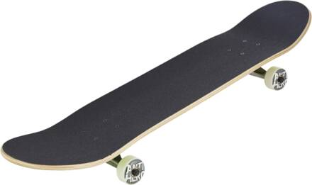
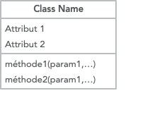

programmation objet
Cette séquence comprend:
- un cours sur la POO: Lien
- une fiche d’exercices: pdf
- des énoncés de bac: Lien
- TP Jeu des 7 familles: Lien (Sans interface graphique)
- TP sur trajectoires de projectiles: Lien
- TP sur la programmation d’un jeu de Dominos: Lien. (Sans interface graphique)
Programmation objet
Principe
En programmation orientée objet, on cherche à organiser les données avec la volonté de se rapprocher de l’architecture d’objets physiques.
Un objet physique, comme par exemple, une planche de skateboard, possède des caractéristiques propres.
image: CHALK CUSTOM BOARD : L’ART D’HABILLER UN SKATE (urban art)

- d’un deck (court, long)
- d’un tail (plat, relevé)
- de trucks (hauts, bas)
- de roues (à gommes tendres, dures)
- d’une décoration (image sous le deck)
C’est son état.
Cette planche peut repondre egalement à un ensemble de messages, qui forment ce que l’on appelle l’interface de l’objet. C’est au travers de ces méthodes que l’on peut interagir avec l’objet, ou que les objets peuvent interagir entre eux.
On peut lui associer une méthode skateboard_pour_parc qui renvoie True si la planche est de type street ou False si la planche est de type cruising, ou prevue pour la decoration.
Un objet comprend donc :
- une partie figée qui représente son état, et qui est constituée de champs ou attributs.
- une partie dynamique qui décrit son comportement, à l’aide de déclarations de méthodes, qui doivent répondre à des messages.
Classe et instance de classe
La structure interne des objets et les messages auxquels ils repondent sont définis dans une classe. Une classe décrit les méthodes de création d’objets de ce type (on parle d’instance de classe), et les méthodes auxquelles répondront les objets de ce type dans la reception des messages.
Avec l’exemple précédent, la classe Skateboard pourrait contenir:
- les méthodes de création des instances des différents skateboards. On y définit les attributs pour chaque nouvelle planche de skateboard que l’on créé. Chaque planche de skate constitue une instance de classe.
- les méthodes de la classe skateboard, qui repondent aux messages du genre:
skateboard_pour_parc? Un message est constitué du nom de la méthode, et permet d’interagir avec celui-ci. Ces méthodes sont accessibles à tous les skates qui sont des instances de la classe skateboard.
En python, la création d’une classe commence par le mot clé class suivi du nom de la classe, de deux points et d’une indentation.
Toute la partie indentée contient les méthodes de création des instances de cette classe et les méthodes de cette classe.
Lors de la programmation, on devra faire référence à l’instance de l’objet sur lequel on travaille: le mot clé self permet ceci en python.
La méthode de création d’un objet est définie par def __init__ suivi au minimum de l’argument self, et eventuellement d’autres arguments.
Les attributs des objets de cette classe sont définis dans cette méthode. Ils sont codés sous la forme self.attribut, et peuvent faire référence aux arguments passés lors de l’instanciation.
Enfin, chaque méthode de classe est définie à l’aide de: def nom_de_la_methode. Celle-ci prend aussi au minimum, l’argument self.
Script complet:
On instancie alors un premier skateboard de la manière suivante:

un premier skateboard bien classique
Instanciation d’un second skateboard:
un skateboard cruiser
La méthode __repr__()
Cette méthode __repr__ s’utilise pour donner une représentation plus lisible de l’objet lorsqu’on veut l’afficher avec la fonction print.
Exemple 1: On essaie d’afficher notre instance de classe mon_sector_9 créée plus haut:
Ce n’est pas très explicite pour un humain. On préfèrera souvent choisir un descriptif personnalisé. Nous allons programmer la chaine de caractères qui sera renvoyée lors du print.
On ajoute maintenant à la classe Skateboard la méthode __repr__() qui sera appelée lorsque l’on utilise print(objet):
On construit à nouveau l’instance de classe mon_sector_9, et on fait print(mon_sector_9):
Remarquer que l’appel à la méthode skateboard_pour_parc se fait en identifiant l’objet qui possède cette méthode: self.skateboard_pour_parc(). Et ici, on n’ajoutera pas de nouvel argument. (On ne met pas self en argument lors du message envoyé à cet objet).
Surcharge d’une fonction de la librairie standard: Ce que l’on vient de réaliser est une surcharge de la fonction print de la librairie standard.
Mais il existe d’autres méthodes de surcharge, prévues pour les opérateurs, ainsi que pour certaines fonctions. On pourra se référer au lien suivant pour approfondir le sujet.
Encapsulation: getter et setter
Lire un attribut: accesseur ou getter
L’utilisateur du programme ne devrait pas utiliser la méthode pointée précédente nom_objet.nom_attribut, permettant d’accéder aux valeurs des attributs: on ne veut pas forcement que l’utilisateur ait accès à la représentation interne des classes.
Pour utiliser ou modifier les attributs, on utilisera de préférence des méthodes dédiées dont le rôle est de faire l’interface entre l’utilisateur de l’objet et la représentation interne de l’objet (ses attributs).
Les attributs sont alors en quelque sorte encapsulés dans l’objet, c’est à dire non accessibles directement. la liste des méthodes devient une sorte de mode d’emploi de la classe.
Pour obtenir la valeur d’un attribut nous utiliserons la méthode des accesseurs (ou “getters”) dont le nom est généralement : getNom_attribut().
Exemple:
En console, une fois l’instance de classe mon_sector_9 définie, on fait:
Modifier des attributs : les mutateurs ou setters
De la même manière, pour modifier la valeur d’un attribut, on devrait utiliser une méthode dédiée. Le nom de cette méthode commence en principe par set:
Exemple:
En console:
Docstrings
Chaque classe définit ses propres manières de stocker, d’acceder et de manipuler les données. C’est le Docstring qui permettra de prendre connaissance des détails, comme par exemple celui de la classe Sept_Familles:
On peut alors prendre connaissance du docstring en faisant:
Interface
L’interface d’une classe est représentée par le diagramme suivant:

Une représentation d'une classe
La suite en TP
- TP Jeu des 7 familles: Lien (Sans interface graphique)
- TP sur trajectoires de projectiles: Lien
- TP sur la programmation d’un jeu de Dominos: Lien. (Sans interface graphique)
Liens
- cours sur python.developpez.com: compléments sur les méthodes spéciales de surcharge des opérateurs, d’héritage et polymorphisme
- références : Classes sur docs.python.org
- prolongement sur les heritages et polymorphismes python doctor POO - debutants
- Resumé de cours : Lyceum.fr > POO
- Autres exercices : Lyceum.fr > POO > Exercices